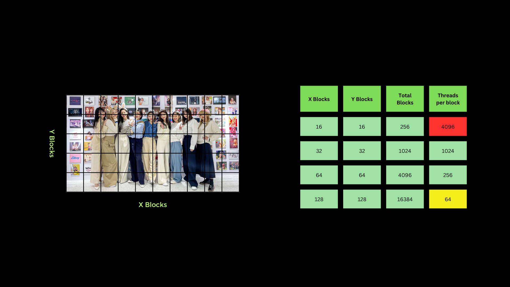

Digital Image Processing using CUDA C++ Part 1

When we want to process data or an instruction that must be done for a lot of data at once, normally we have to repeat it to do it. However, a computer that has a processor with more than one core can perform an
instruction with several data at once as if simultaneously. This concept is then known as concurrency. Over time, hardware for processing graphic data began to develop, namely the GPU developed by NVIDIA.
With the presence of the GPU, computers are able to process graphic data faster and more powerfully because the GPU has a lot of streaming multiprocessors to process data at once. Unlike the CPU, each streaming
multiprocessor from the GPU has thousands of threads to work together. With that basis, NVIDIA then created CUDA which is a Parallel Computing Platform that allows developers to access and optimize the use of the
streaming multiprocessor which is then called the CUDA core. CUDA is not just a programming language, but more than that.
 In this post, CUDA with C++ interface will be discussed. For some who have used C++ on desktop computers, there may be those who are familiar with the term concurrency, which is creating instructions to perform several
tasks or jobs at almost the same time. In C++, we can utilize the number of threads from the CPU to perform several jobs at almost the same time, while the use of CUDA can be more optimal if used to process the same
instruction for many data at once.
In this post, CUDA with C++ interface will be discussed. For some who have used C++ on desktop computers, there may be those who are familiar with the term concurrency, which is creating instructions to perform several
tasks or jobs at almost the same time. In C++, we can utilize the number of threads from the CPU to perform several jobs at almost the same time, while the use of CUDA can be more optimal if used to process the same
instruction for many data at once.
 With these capabilities, GPU is very suitable for use in image data processing. In this post, we will focus on the use of CUDA C++ in Ubuntu based on the author's experience. As usual, the first thing to do is to install
the CUDA Toolkit according to the version of the GPU we have. The installation steps for the CUDA Toolkit itself can be found here .
After following the steps in the tutorial, we must ensure that the CUDA Toolkit is properly installed.
With these capabilities, GPU is very suitable for use in image data processing. In this post, we will focus on the use of CUDA C++ in Ubuntu based on the author's experience. As usual, the first thing to do is to install
the CUDA Toolkit according to the version of the GPU we have. The installation steps for the CUDA Toolkit itself can be found here .
After following the steps in the tutorial, we must ensure that the CUDA Toolkit is properly installed.
Check whether the installation process was successful or not.
nvcc --version
Check whether the CUDA driver has been successfully installed or not.
nvidia-smi
For those who are used to using C++ on Ubuntu, it will be familiar to use GCC/G++ as a compiler for the programs created. For CUDA C++ itself, it is more or less similar to what needs to be done for regular C++, except that the compiler of CUDA C++ uses NVCC as the compiler. For the file format of CUDA C++ itself, it can be identified by the file format (.cu). For the structure of the CUDA C++ program, it can be seen as an example of a 1-file program below (hello.cu).
#include <stdio.h>
__global__ void hello() {
printf("Hello, CUDA\n");
}
void main() {
hello<<<1,1>>>();
cudaDeviceSynchronize();
}
The program clip above is a simple example of the CUDA C++ program structure. The program above when the runtime is divided into CPU portions and GPU portions. To compile and run the program is done using the command line
nvcc hello.cu -o hello_cude
./hello_cuda
In the structure in CUDA C++, it can be simply divided into two parts, namely the CPU part and the GPU part. In the GPU part, there is a function that begins with __global__ to declare that this function will be executed by CUDA
or is also commonly called the CUDA kernel function. While in the CPU part, the CUDA kernel function is called like a regular C++ function but with a special annotation, namely the character <<<>>>.
For the function of two numbers 1 in the special character will be discussed further below. For more details about the structure of the C++ program, you can see the image below:
 From a programming perspective, it can be said that the CUDA programming model is a matrix programming model. This may be based on the fact that in CUDA programming itself, there are several terms for modeling GPU
memory allocation on NVIDIA GPUs or known as VRAM, namely Grid, Block, and Thread. In a Grid, it is divided into many Blocks, and in a Block, there are many Threads. The difference between
Threads and Blocks and Grids is that Threads are executed by the GPU almost parallel, but Blocks and Grids use the concept of concurrency. In terms of quantity, the number of threads in a block is limited, namely 1024.
While in a Grid, the number of Blocks can be said to be almost unlimited. Therefore, to optimize data processing, the strategy of using all three is very important, with an orientation to always maximize the number of Threads in it.
The following is an illustration of the use of threads, blocks, and grids in CUDA C++.
From a programming perspective, it can be said that the CUDA programming model is a matrix programming model. This may be based on the fact that in CUDA programming itself, there are several terms for modeling GPU
memory allocation on NVIDIA GPUs or known as VRAM, namely Grid, Block, and Thread. In a Grid, it is divided into many Blocks, and in a Block, there are many Threads. The difference between
Threads and Blocks and Grids is that Threads are executed by the GPU almost parallel, but Blocks and Grids use the concept of concurrency. In terms of quantity, the number of threads in a block is limited, namely 1024.
While in a Grid, the number of Blocks can be said to be almost unlimited. Therefore, to optimize data processing, the strategy of using all three is very important, with an orientation to always maximize the number of Threads in it.
The following is an illustration of the use of threads, blocks, and grids in CUDA C++.
 In the image above, the pink, blue, red, and purple boxes are a block in CUDA which is then called a grid from a collection of blocks. To see an example of thread indexing, you can refer to the pink box.
Then, from the illustration, a formula or pattern can be made to create indexing for data that will be processed by CUDA later. Here I try to give examples of several patterns that can possibly be used
in image data processing using CUDA C++.
In the image above, the pink, blue, red, and purple boxes are a block in CUDA which is then called a grid from a collection of blocks. To see an example of thread indexing, you can refer to the pink box.
Then, from the illustration, a formula or pattern can be made to create indexing for data that will be processed by CUDA later. Here I try to give examples of several patterns that can possibly be used
in image data processing using CUDA C++.
1D Grid 1D Block
__device__ int getGlobalIdx_1D_1D() {
return blockIdx.x * blockDim.x + threadIdx.x;
}
1D Grid 2D Block
__device__ int getGlobalIdx_1D_2D() {
return blockIdx.x * blockDim.x * blockDim.y
+ threadIdx.y * blockDim.x + threadIdx.x;
}
1D Grid 3D Block
__device__ int getGlobalIdx_1D_3D() {
return blockIdx.x * blockDim.x * blockDim.y * blockDim.z
+ threadIdx.z * blockDim.y * blockDim.x
+ threadIdx.y * blockDim.x + threadIdx.x;
}
2D Grid 1D Block
__device__ int getGlobalIdx_2D_1D() {
int blockId = blockId.y * gridDim.x + blockIdx.x;
int threadId = blockId * blockDim.x + threadIdx.x;
return threadId;
}
2D Grid 2D Block
__device__ int getGlobalIdx_2D_2D() {
int blockId = blockId.x + blockIdx.y * gridDim.x;
int threadId = blockId * (blockDim.x * blockDim.y)
+ (threadIdx.y * blockDim.x) + threadIdx.x;
return threadId;
}
2D Grid 3D Block
__device__ int getGlobalIdx_2D_3D() {
int blockId = blockId.x + blockIdx.y * gridDim.x;
int threadId = blockId * (blockDim.x * blockDim.y * blockDim.z)
+ (threadIdx.z * (blockDim.x + blockDim.y));
+ (threadIdx.y * blockDim.x) + threadIdx.x;
return threadId;
}
3D Grid 1D Block
__device__ int getGlobalIdx_3D_1D() {
int blockId = blockId.x + blockIdx.y * gridDim.x
+ gridDim.x * gridDim.y * blockIdx.z;
int threadId = blockId * blockDim.x + threadIdx.x;
return threadId;
}
3D Grid 2D Block
__device__ int getGlobalIdx_3D_2D() {
int blockId = blockId.x + blockIdx.y * gridDim.x
+ gridDim.x * gridDim.y * blockIdx.z;
int threadId = blockId * (blockDim.x * blockDim.y)
+ (threadIdx.y * blockDim.x) + threadIdx.x;
return threadId;
}
3D Grid 3D Block
__device__ int getGlobalIdx_3D_3D() {
int blockId = blockId.x + blockIdx.y * gridDim.x
+ gridDim.x * gridDim.y * blockIdx.z;
int threadId = blockId * (blockDim.x * blockDim.y * blockDim.z)
+ (threadIdx.z * (blockDim.x * blockDim.y))
+ (threadIdx.y * blockDim.x) + threadIdx.x
return threadId;
}
Example of Digital Image Processing using CPU and CUDA C++
For starters, the example usually used to see how CUDA C++ works is with the vector add operation. However, this time let's use an image directly to convert an RGB image to a 1-channel grayscale image. The operation performed is very simple, namely only taking the average for each pixel value of R, G, and B and making it a value for a 1-channel grayscale image pixel. In this example, OpenCV is used as I/O to read image data. The first strategy that must be done is to optimize the use of Threads, Blocks, and Grids in CUDA as much as possible. For this case, the entire 1 whole image can be considered as a Grid which is then divided into a grid with a divider of 32 x blocks and 32 y blocks. So as seen in the image below, the number of threads for each block used is 1024. Please note that the number of threads in one block is limited to only 1024 threads. So using 16 x blocks and 16 y blocks cannot be used and 128 x blocks and 128 y blocks are less than optimal because they use too few threads per block (depending on needs).  There are some important syntaxes that are actually similar to C or C++ syntax. Some of them are cudaMalloc which is used to allocate memory on the GPU vRAM. cudaMemcpy to copy data from CPU RAM to GPU vRAM and vice versa. If there is cudaMalloc, then there is also cudaFree to free up memory that has been used by cudaMalloc. To see how the process of how to process digital images using CUDA C++ can directly click the following link Example of CUDA C++ and OpenCV
Reference
https://blogs.nvidia.com/blog/2012/09/10/what-is-cuda-2/
https://cs.calvin.edu/courses/cs/374/CUDA/CUDA-Thread-Indexing-Cheatsheet.pdf